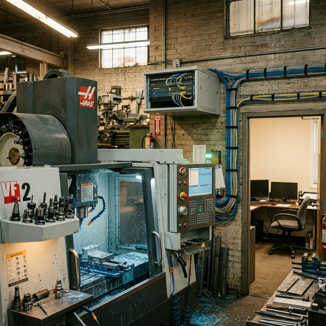

Disclaimer: This is a fictional market scenario designed to illustrate the structural dynamics of AI-brokered consortium assembly. The characters, companies, and events are invented. The market forces, the capability gaps, and the platform architecture are real.
The perimeter of what constitutes “manufacturing” has expanded into two dozen adjacent specialties that didn’t exist a generation ago. Every new regulation, every software platform, every cybersecurity framework adds another line item to the roster of skills a manufacturer must access. A large company absorbs this by hiring specialists into dedicated departments. A twelve-person shop absorbs it by asking whoever seems least busy.
The choices are all unsatisfying: train the machinist who is least terrified of computers, hire a consulting firm at $25,000+ per engagement, or post on Upwork and sort through fifty applicants who have never set foot in a manufacturing facility. But there is a fourth option that doesn’t yet exist: find another SMB that happens to have surplus capacity in exactly that skill — a production supervisor who did cybersecurity in a previous career, a quality manager who spent five years doing ISO documentation for an aerospace contractor.
These people exist. Their employers have already benefited from their skills and now have what amounts to surplus capacity in a specialized domain. But there is no mechanism for one SMB to discover that another SMB has a person with forty hours of uncommitted expertise in the exact discipline they need.
1. Nadine’s Audit
Nadine Bergeron runs a twenty-two-person manufacturer of custom hydraulic cylinders and manifold blocks in Trois-Rivières, Québec. The company — Hydraulique Bergeron — makes components for forestry equipment, snow groomers, and marine deck machinery. It’s a family business, founded by her father in 1986. Revenue is steady, margins are tight, and the customer base is loyal.
Last month, a procurement officer at one of her largest customers — a Scandinavian forestry equipment OEM that buys custom hydraulic manifolds — sent a new supplier questionnaire. The questionnaire is twenty-three pages long and includes a section Nadine has never seen before: Industrial Cybersecurity Compliance Self-Assessment.
The section asks whether Hydraulique Bergeron has: a documented cybersecurity policy; a network segmentation plan separating IT systems from operational technology (OT) systems; multifactor authentication on all administrative accounts; an incident response plan; regular vulnerability scanning; an employee cybersecurity training program; and compliance with either IEC 62443 (industrial automation security) or NIST SP 800-82 (guide to industrial control system security).
Nadine’s operation has none of this. The shop runs three CNC lathes and two CNC mills, all with Fanuc controllers networked to a single CAM workstation running Mastercam. The network also connects to the office — the ERP system, email, accounting. The entire IT infrastructure is managed by her nephew Étienne, who is officially the production scheduler but is the unofficial “computer person” because he built gaming PCs in high school.
Nadine calls the Scandinavian procurement officer. The conversation is friendly but firm: the OEM’s parent company has adopted a supply chain cybersecurity standard. All Tier 2 and Tier 3 suppliers must demonstrate at least “basic hygiene” compliance within six months or face supplier status review. The procurement officer is sympathetic — she knows Nadine’s manifold blocks are excellent — but the policy is corporate, not personal.
Nadine now has a problem that is both urgent and completely outside her domain. She calls two cybersecurity consulting firms in Montréal. Both are happy to help. Both quote engagements starting at $25,000 — a gap assessment, a remediation plan, employee training, and documentation. One can start in eight weeks; the other in twelve. Neither has specific experience with manufacturing OT environments — they do offices, clinics, and law firms. The Fanuc controllers, the Mastercam workstation, the air-gapped CNC versus networked CNC question — that’s not their world.
Nadine needs someone who understands both cybersecurity and manufacturing shop floors. She needs perhaps forty to sixty hours of that person’s time, spread over four to six weeks. She does not need a full-time cybersecurity analyst, and she cannot afford one. She needs a fractional expert — and not a generic one, but one who knows what a Fanuc controller is, who has seen a CAM workstation connected to a production network, who understands that “segment the OT network” in a twenty-two-person shop means something different than it does at Bombardier.
2. Maxime’s Surplus
Three hundred kilometres east, in Sherbrooke, Québec, Maxime Ouellet is the production supervisor at Usinage Précision Estrie — a fourteen-person precision machining shop that makes aerospace components and medical device parts. Maxime has an unusual résumé.
Before joining Usinage Précision four years ago, Maxime spent eight years as a network security analyst at a defence contractor in Mirabel. He holds a CompTIA Security+ certification (maintained) and completed a SANS Institute course in industrial control system security — GICSP (Global Industrial Cyber Security Professional). He left the defence industry because he wanted to work closer to the machines, not the screens. He became a machinist, then a CNC programmer, then a production supervisor.
When Maxime arrived at Usinage Précision, he took one look at the shop’s network — five Haas CNC machining centres daisy-chained to an unsegmented Ethernet network shared with the office computers — and quietly spent three weekends fixing it. He segmented the OT network. He configured the router’s firewall rules. He set up a separate VLAN for the CNC controllers with restricted gateway access. He enabled multifactor authentication on the Jobboss ERP system. He wrote a ten-page cybersecurity policy document, a four-page incident response plan, and a one-page employee training handout. He presented it to his boss, Marc-André, who said: “This is good. Can you also look at the coolant pump on the Haas VF-4? It’s making a noise.”
Maxime now carries both roles — production supervisor and de facto cybersecurity administrator — but the cybersecurity work is done. The systems are hardened. The documentation is written. The annual review takes him about four hours. He has forty-plus hours of specialized, manufacturing-specific cybersecurity expertise with nothing to apply it to — surplus capacity in a skill that other manufacturers desperately need.
He doesn’t know Nadine exists. She doesn’t know he exists. And no marketplace, directory, industry association listing, or freelance platform connects SMB-to-SMB fractional skill sharing.
3. What the Platform Changes
Now imagine that CME — Canadian Manufacturers & Exporters — has deployed a fractional skills marketplace on MarketForge infrastructure, designed for SMB manufacturers who need to buy, sell, or swap specialized expertise in fractional quantities. Manufacturers register their available expertise (surplus capacity in skills their employees already have) and their needed expertise (gaps they need to fill). The platform’s AI matches supply to demand — not by job title, but by demonstrated competence against specific requirements.
1. Nadine’s Listing
Nadine opens the platform and describes her need — in French, conversationally:
“Mon client scandinave me demande une auto-évaluation en cybersécurité industrielle. Je n’ai aucune politique de cybersécurité, aucun plan de segmentation réseau, rien. J’ai besoin de quelqu’un qui comprend la sécurité informatique ET les ateliers de fabrication — quelqu’un qui sait ce qu’est un contrôleur Fanuc et pourquoi il ne devrait pas être sur le même réseau que mon courriel. Il me faut probablement 40 à 60 heures de travail, étalées sur un mois.”
The platform’s AI extracts structured requirements:
- Skill domain: Industrial cybersecurity (IEC 62443 / NIST SP 800-82)
- Manufacturing context: CNC machining, Fanuc controllers, CAM workstation (Mastercam), small shop (22 employees)
- Specific deliverables: Cybersecurity policy, network segmentation plan, MFA implementation, incident response plan, employee training, compliance self-assessment documentation
- Scope: 40–60 hours, on-site or hybrid
- Timeline: Results needed within 6 weeks
- Language: French preferred
- Budget ceiling (private): $8,000 maximum
2. Maxime’s Profile
Maxime registered on the platform two months ago when CME’s regional representative visited the shop for a technology adoption assessment. The platform built his expertise profile through a structured interview and document uploads:
- Primary role: Production supervisor, Usinage Précision Estrie
- Available expertise: Industrial cybersecurity — ICS/OT network security, policy development, employee training
- Certifications: CompTIA Security+, SANS GICSP
- Manufacturing experience: CNC machining environments, Haas and Fanuc controllers, Jobboss ERP, Mastercam, shop networks
- Demonstrated work: Segmented OT/IT networks at own facility, wrote cybersecurity policy and incident response plan, passed customer cybersecurity audit
- Availability: Evenings and selected weekdays (with employer’s agreement), approximately 8–12 hours per week
- Language: French native, English fluent
- Rate (private): $85/hour — substantially below consulting firm rates, reflecting that this is side capacity from a salaried employee, not a consulting business
Maxime’s employer, Marc-André, has also registered — as the “releasing” company. The platform requires employer acknowledgment for any skills-sharing engagement: the releasing company confirms the employee’s availability, approves the scope of external work, and agrees that it does not conflict with the employee’s primary duties or the releasing company’s competitive interests. Marc-André agreed readily — Usinage Précision doesn’t compete with Hydraulique Bergeron (different industries, different geographies), and he sees fractional revenue as a way to retain Maxime by making his full skill set economically productive.
3. The Match
The platform’s semantic matching engine doesn’t match by job title — “cybersecurity analyst” would return hundreds of candidates without manufacturing OT experience. Instead, it matches Nadine’s specific requirements against Maxime’s demonstrated competence: GICSP certification covering IEC 62443, hands-on experience with Fanuc and Haas controllers in networked CNC environments, a Mastercam workstation he has already secured, and — critically — a 14-person shop context that means he understands “network segmentation” as a managed switch and VLAN configuration, not an enterprise firewall appliance. He has already written the exact documents Nadine needs. He works in French. The estimated cost of $4,250 is well within her $8,000 ceiling.
Both parties receive match notifications. Nadine sees a production supervisor in a Québec precision shop who holds GICSP certification and has already done exactly what she needs — at a fifth of the consulting firm price. Maxime sees a hydraulic cylinder manufacturer in Trois-Rivières with Fanuc controllers and Mastercam in an environment identical to the one he secured four years ago.
4. What the Platform Knows
When CME configured the platform, they populated the CommonContext with domain-specific reference material:
- IEC 62443 requirements mapped to shop sizes: a simplified matrix showing which security levels are expected for different manufacturing contexts — a 20-person job shop has different requirements than a 500-person Tier 1 supplier
- Skills engagement contract templates: standard terms for fractional engagements between SMBs, covering IP protection, non-competition scope, liability allocation, and payment terms — vetted by CME’s legal team
5. The Engagement
Maxime drives to Trois-Rivières and walks through Nadine’s shop floor. He identifies the problems in twenty minutes: everything — CNC controllers, CAM workstation, ERP, office computers — is on the same flat network with a default admin password. He has seen this before. It is the same configuration his own shop had four years ago.
Over five weeks, working approximately twelve hours per week, Maxime segments the OT network, enables multifactor authentication, writes a cybersecurity policy adapted from his own, drafts an incident response plan, conducts employee training in French, and completes the Scandinavian OEM’s self-assessment questionnaire with Nadine.
Total billable hours: fifty-three. Total cost: $4,505. Time to completion: five weeks. The Montréal consulting firms quoted $25,000+ and eight to twelve weeks — and neither had CNC shop floor experience.
6. What Makes This a Shadow Capacity Story
Maxime Ouellet carries forty-plus hours of industrial cybersecurity expertise that his current employer has already used and no longer needs at full capacity. That expertise — GICSP-certified, shop-floor-tested, documented — is shadow capacity locked inside a person, not a machine. It depreciates differently from idle equipment: it stays sharp through professional maintenance but generates zero economic value for the wider ecosystem because no mechanism makes it visible.
This is the human face of shadow capacity. Every SME employee who carries specialist skills from a previous career — quality management from aerospace, regulatory expertise from pharma, project controls from construction — represents latent capability that the manufacturing ecosystem cannot see or access. Multiply Maxime by every career-changer in every SME across Ontario and the scale of the waste becomes structural.
Opacity — Maxime’s cybersecurity competence is invisible to anyone outside his own shop. It doesn’t appear on LinkedIn, in any industry directory, or on any freelance platform. Discovery — No mechanism connects SMB-to-SMB fractional skill sharing; traditional directories are designed around full-time roles, not surplus capacity inside small firms. Information asymmetry — A GICSP certification tells Nadine something, but what she needs to know is: has this person actually secured a CNC shop floor? Trust — Nadine is giving Maxime access to her network infrastructure; Marc-André is lending out his production supervisor. The platform’s engagement framework provides IP, non-compete, and liability protections without requiring either party to hire a lawyer.
This is part 6 of the series Recapturing Shadow Manufacturing Capacity in Ontario. For more on the structural dynamics of thin markets, see The Problem and the Intervention Matrix.